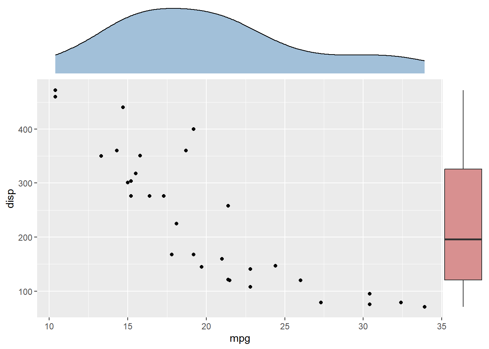
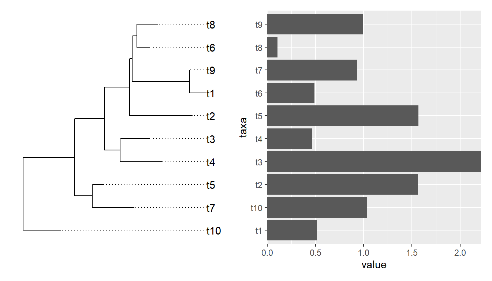
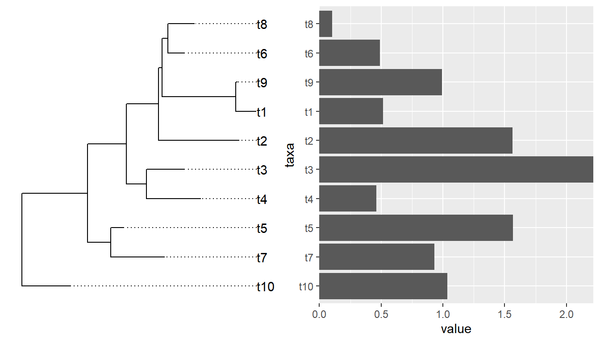
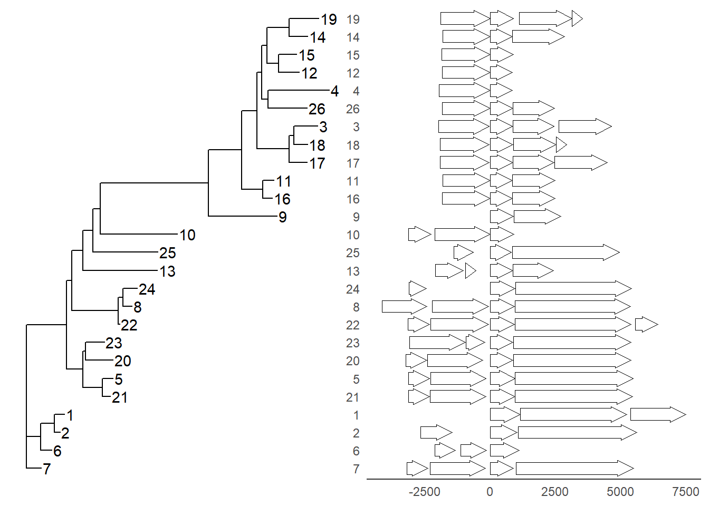
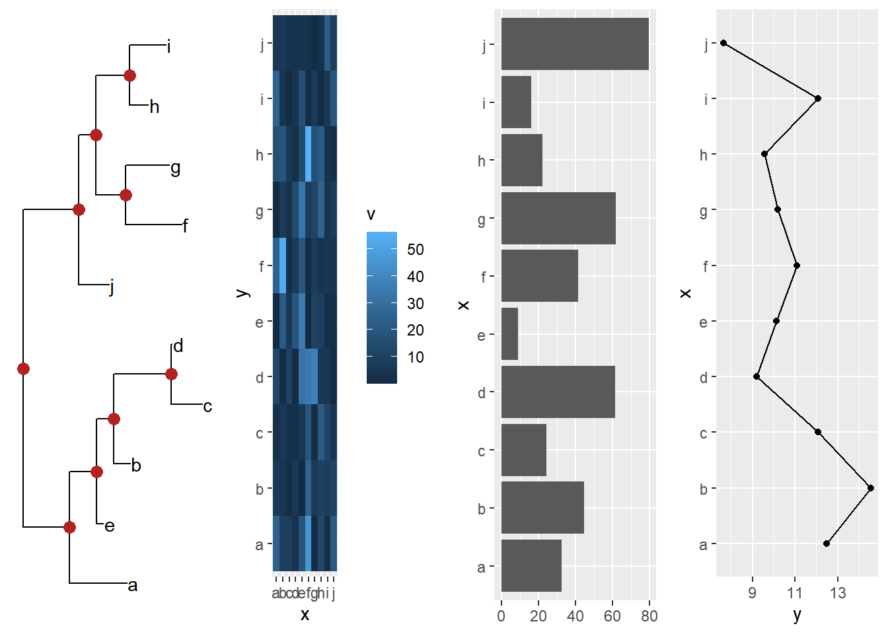
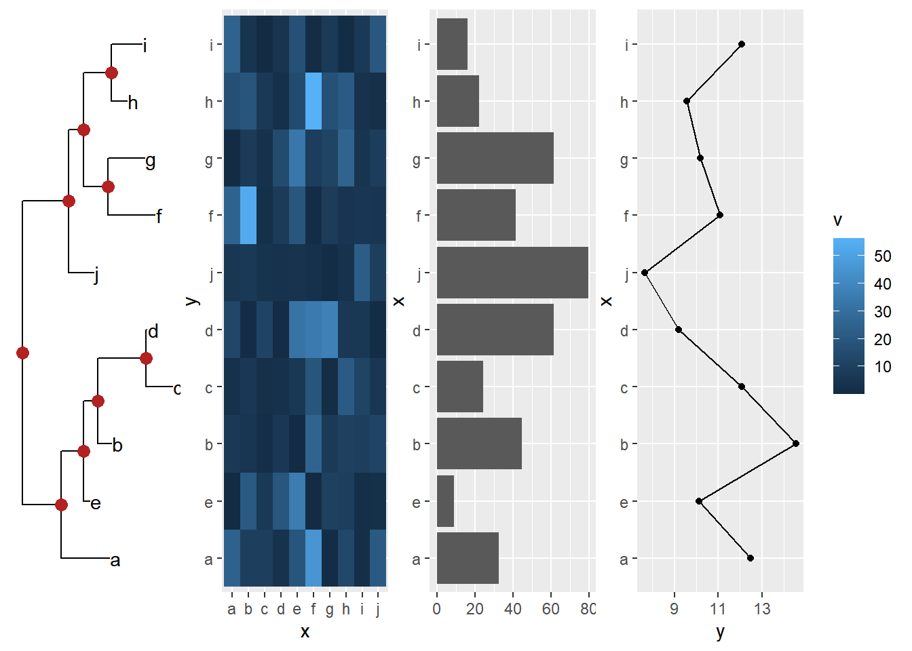
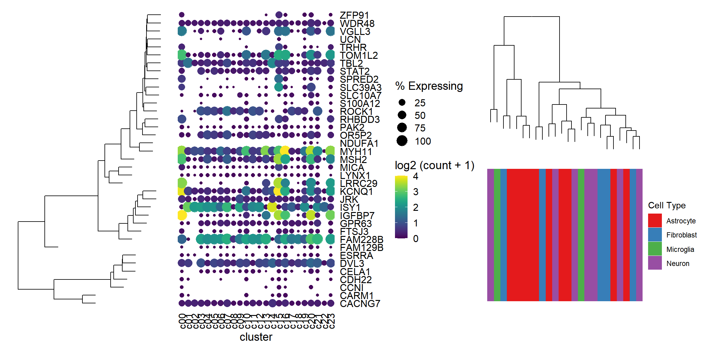
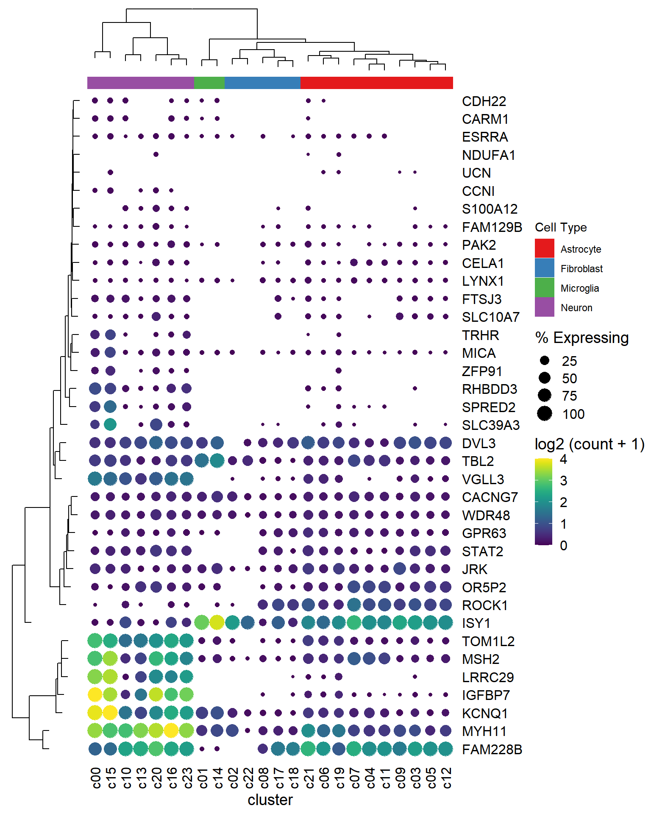

2 Align associated subplots
With xlim2() and ylim2(), it is easy to align associated subplots to annotate a main figure. The aplot package provides insert_left(), insert_right(), insert_top() and insert_bottom() as shortcut to help users aligning subplots.
2.1 A first glance
library(ggplot2)
library(aplot)
p <- ggplot(mtcars, aes(mpg, disp)) + geom_point()
p2 <- ggplot(mtcars, aes(mpg)) +
geom_density(fill='steelblue', alpha=.5) +
ggtree::theme_dendrogram()
p3 <- ggplot(mtcars, aes(x=1, y=disp)) +
geom_boxplot(fill='firebrick', alpha=.5) +
theme_void()
ap <- p %>%
insert_top(p2, height=.3) %>%
insert_right(p3, width=.1)
## you can use `ggsave(filename="aplot.png", plot=ap)` to export the plot to image file
print(ap) # or just type ap will print the figure
2.2 Aligning plots with a tree
Aligning a plot with a tree is difficult, as it requres expertise to extract the order of taxa on the tree.
library(ggtree)
set.seed(2020-03-27)
x <- rtree(10)
d <- data.frame(taxa=x$tip.label, value = abs(rnorm(10)))
p <- ggtree(x) + geom_tiplab(align = TRUE) + xlim(NA, 3)
p2 <- ggplot(d, aes(value, taxa)) + geom_col() +
scale_x_continuous(expand=c(0,0))
library(patchwork)
p | p2
Althought patchwork did a good job at aligning y-axes among the two plots, the output is not what we want if the bar heights are associated with external nodes on the tree. It is not so obvious for an ordinary user to extract the order of tip label from the tree to re-draw the barplot.
If we insert a ggtree object in aplot, it will transform other plots in the same row (insert_left and insert_right) or same column (insert_top and insert_bottom) based on the tree structure.

Example from https://github.com/YuLab-SMU/ggtree/issues/339.
require(ggtree)
require(ggplot2)
require(dplyr)
require(gggenes)
tree <- read.tree("data/nbh.nwk")
nbh <- read.csv("data/nbh.csv")
tree_plot <- ggtree(tree) +
geom_tiplab(aes(label=label))
nbh_plot <- ggplot(
(nbh %>% select(label, block_id,pid,start,end,strand) %>% distinct()),
aes(xmin = start, xmax = end, y = block_id, forward = strand) # as_factor(block_id)
) +
geom_gene_arrow() +
#scale_fill_brewer(palette = "Set3") +
theme_genes() %+replace%
theme(panel.grid.major.y = element_line(colour = NULL)) + # , linetype = "dotted")) +
#theme_classic() +
theme(
axis.title.x=element_blank(),
#axis.text.x=element_blank(),
axis.ticks.x=element_blank(),
#axis.line.x = element_blank(),
axis.title.y=element_blank(),
#axis.text.y=element_blank(),
axis.ticks.y=element_blank(),
axis.line.y = element_blank()
)
require(aplot)
insert_left(nbh_plot, tree_plot)
Example from https://github.com/YuLab-SMU/ggtree/issues/313.
set.seed(20200618)
## Create a random tree
tre <- rtree(10)
tre$tip.label <- letters[1:10]
## Build matrix with some random numbers in long format so can be plotted as "heatmap" using geom_tile
gmat <- expand.grid(x = letters[1:10], y = letters[1:10])
gmat$v <- rexp(100, rate=.1)
## Generate some reandom numbres for a line plot
gline <- tibble(x = letters[1:10], y = rnorm(10, 10, 2))
## Generate some random percentages for a bar plot
gbar <- tibble(x = letters[1:10], y = round(runif(10) * 100,1))
## Construct ggtree
ptre <- ggtree(tre) + geom_tiplab() +
geom_nodepoint(colour = 'firebrick', size=3)
## Constuct companion plots
pmat <- ggplot(gmat, aes(x,y, fill=v)) + geom_tile()
pbar <- ggplot(gbar, aes(x,y)) + geom_col() + coord_flip() + ylab(NULL)
pline <- ggplot(gline, aes(x,y)) +
geom_line(aes(group = 1)) + geom_point() + coord_flip()
cowplot::plot_grid(ptre, pmat, pbar, pline, ncol=4)

2.3 Creating annotated heatmap
The xlim2() and ylim2() functions create many possibilities to align figures. For instance, we can add column and row annotations around a heatmap in all sides (top, bottom, left and right). They can be aligned properly with the aids of xlim2() and ylim2() even with missing values presented as demonstrated in Figure 2.1.
library(tidyr)
library(ggplot2)
library(ggtree)
set.seed(2019-11-07)
d <- matrix(rnorm(25), ncol=5)
rownames(d) <- paste0('g', 1:5)
colnames(d) <- paste0('t', 1:5)
hc <- hclust(dist(d))
hcc <- hclust(dist(t(d)))
phr <- ggtree(hc)
phc <- ggtree(hcc) + layout_dendrogram()
d <- data.frame(d)
d$gene <- rownames(d)
dd <- gather(d, 1:5, key="condition", value='expr')
p <- ggplot(dd, aes(condition,gene, fill=expr)) + geom_tile() +
scale_fill_viridis_c() +
scale_y_discrete(position="right") +
theme_minimal() +
xlab(NULL) + ylab(NULL)
g <- ggplot(dplyr::filter(dd, gene != 'g2'), aes(gene, expr, fill=gene)) +
geom_boxplot() + coord_flip() +
scale_fill_brewer(palette = 'Set1') +
theme_minimal() +
theme(axis.text.y = element_blank(),
axis.ticks.y = element_blank(),
panel.grid.minor = element_blank(),
panel.grid.major.y = element_blank()) +
xlab(NULL) + ylab(NULL)
ca <- data.frame(condition = paste0('t', 1:5),
A1 = rep(LETTERS[1:2], times=c(3, 2)),
A2 = rep(letters[3:5], times=c(1, 3, 1))
)
cad <- gather(ca, A1, A2, key='anno', value='type')
pc <- ggplot(cad, aes(condition, y=anno, fill=type)) + geom_tile() +
scale_y_discrete(position="right") +
theme_minimal() +
theme(axis.text.x = element_blank(),
axis.ticks.x = element_blank()) +
xlab(NULL) + ylab(NULL)
set.seed(123)
dp <- data.frame(gene=factor(rep(paste0('g', 1:5), 2)),
pathway = sample(paste0('pathway', 1:5), 10, replace = TRUE))
pp <- ggplot(dp, aes(pathway, gene)) +
geom_point(size=5, color='steelblue') +
theme_minimal() +
theme(axis.text.x=element_text(angle=90, hjust=0),
axis.text.y = element_blank(),
axis.ticks.y = element_blank()) +
xlab(NULL) + ylab(NULL)
p %>% insert_left(phr, width=.3) %>%
insert_right(pp, width=.4) %>%
insert_right(g, width=.4) %>%
insert_top(pc, height=.1) %>%
insert_top(phc, height=.2)
Figure 2.1: Create complex heatmap. With the helps of xlim2() and ylim2(), it is easy to align row or column annotations around a figure (e.g. a heatmap).
2.4 A single cell example
Example taken from https://davemcg.github.io/post/lets-plot-scrna-dotplots/
library(readr)
library(tidyr)
library(dplyr)
library(ggplot2)
library(ggtree)
file <- system.file("extdata", "scRNA_dotplot_data.tsv.gz", package="aplot")
gene_cluster <- readr::read_tsv(file)
dot_plot <- gene_cluster %>%
mutate(`% Expressing` = (cell_exp_ct/cell_ct) * 100) %>%
filter(count > 0, `% Expressing` > 1) %>%
ggplot(aes(x=cluster, y = Gene, color = count, size = `% Expressing`)) +
geom_point() +
cowplot::theme_cowplot() +
theme(axis.line = element_blank()) +
theme(axis.text.x = element_text(angle = 90, vjust = 0.5, hjust=1)) +
ylab(NULL) +
theme(axis.ticks = element_blank()) +
scale_color_gradientn(colours = viridis::viridis(20), limits = c(0,4), oob = scales::squish, name = 'log2 (count + 1)') +
scale_y_discrete(position = "right")
mat <- gene_cluster %>%
select(-cell_ct, -cell_exp_ct, -Group) %>% # drop unused columns to faciliate widening
pivot_wider(names_from = cluster, values_from = count) %>%
data.frame() # make df as tibbles -> matrix annoying
row.names(mat) <- mat$Gene # put gene in `row`
mat <- mat[,-1] #drop gene column as now in rows
clust <- hclust(dist(mat %>% as.matrix())) # hclust with distance matrix
ggtree_plot <- ggtree::ggtree(clust)
v_clust <- hclust(dist(mat %>% as.matrix() %>% t()))
ggtree_plot_col <- ggtree(v_clust) + layout_dendrogram()
labels= ggplot(gene_cluster, aes(cluster, y=1, fill=Group)) + geom_tile() +
scale_fill_brewer(palette = 'Set1',name="Cell Type") +
theme_void()
library(patchwork)
ggtree_plot | dot_plot | (ggtree_plot_col / labels)
library(aplot)
## the rows of the dot_plot was automatically reorder based on the tree
dot_plot %>%
insert_left(ggtree_plot, width=.2) 
## the columns of the dot_plot was automatically reorder based on the tree
dot_plot %>%
insert_left(ggtree_plot, width=.2) %>%
insert_top(labels, height=.02) %>%
insert_top(ggtree_plot_col, height=.1)